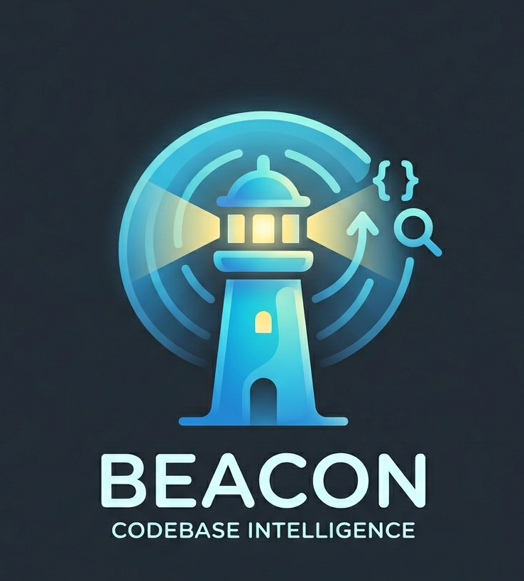

Workspace
Not connected
- Slack
- Disconnected
- GitHub
- Disconnected
- Repos
- 0

BeaconAdmin control plane
Connect Slack, connect GitHub, choose repos, and watch the first indexed answers become available to the workspace.
No repos selected yet. Continue setup to add the first pilot repo.